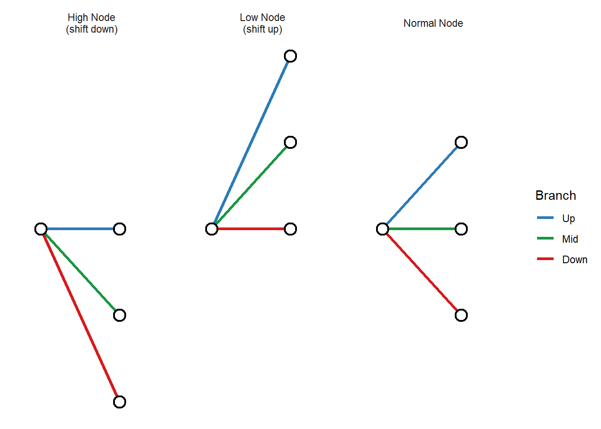
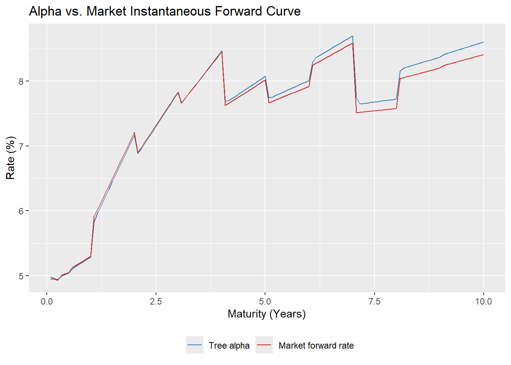
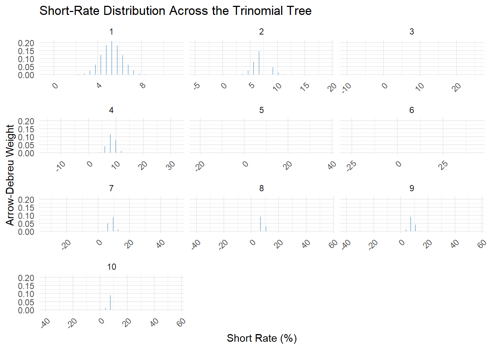
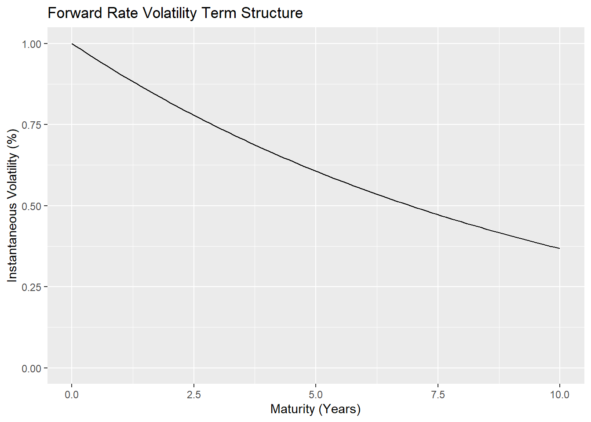
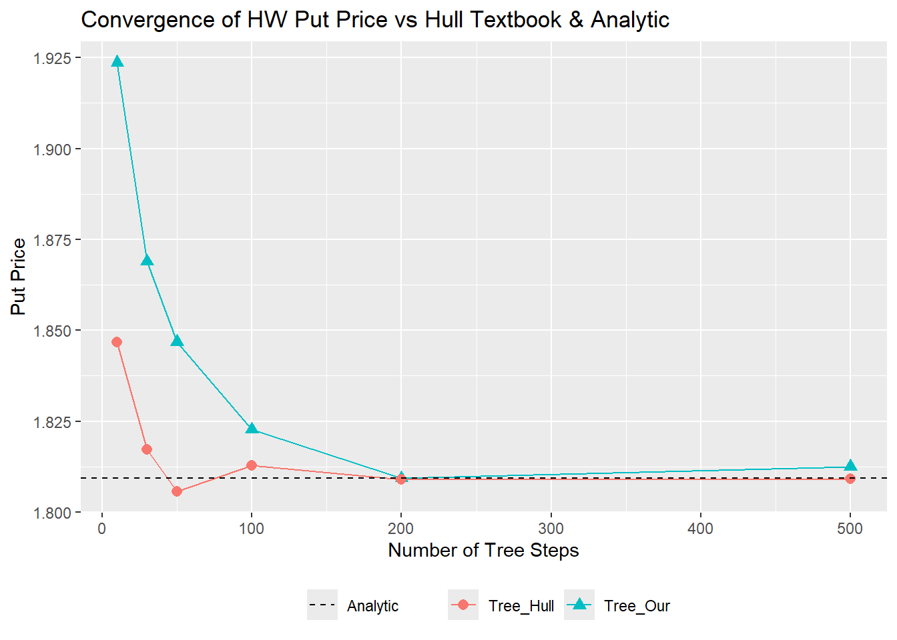

library(dplyr) # for data manipulation
library(tidyr) # for data manipulation
library(ggplot2) # to draw chartsHull-White One-Factor Model
An exercise in understanding the mechanics of the Hull-White one-factor model through implementing it and benchmarking its outputs
Intro/Overview
Interest rate models sit at the heart of fixed income derivatives pricing, and among them the Hull-White one-factor model occupies a particularly important place. Introduced by John Hull and Alan White in 1990, it was designed to solve a fundamental problem that plagued earlier short-rate models such as Vasicek and Cox-Ingersoll-Ross (CIR): they could not be calibrated to exactly reproduce an observed market yield curve. The Hull-White model adds a time-varying mean-reversion level that absorbs this mismatch, making it both analytically tractable and practically useful.
This post walks through a ground-up implementation of the Hull-White one-factor model using a trinomial tree, entirely in base R. Along the way we will build intuition for why the model is structured the way it is, why a trinomial tree is preferred over a binomial tree for this particular model, and what the model’s implied volatility surface looks like. At the end we compare our hand-rolled implementation against an example with answers from John C. Hull’s textbook as a benchmark.
Setting Up
Loading Libraries
The Model
The Hull-White one-factor model describes the short rate \(r(t)\) under the risk-neutral measure as the stochastic differential equation:
\[ dr(t) = \bigl[\theta(t) - a\, r(t)\bigr]\, dt + \sigma\, dW(t) \]
where:
- \(a > 0\) is the mean-reversion speed, controlling how quickly the short rate reverts toward its long-run level.
- \(\sigma > 0\) is the volatility of the short rate.
- \(\theta(t)\) is a time-dependent drift that is chosen so the model exactly fits the initial term structure (yield curve).
- \(W(t)\) is a standard Brownian motion under the risk-neutral measure.
The key insight is that \(\theta(t)\) is not a free parameter — it is determined analytically from the initial discount curve (the market-observed zero rates). This is what makes Hull-White an arbitrage-free model: the calibrated tree will price zero-coupon bonds consistently with the observed market prices.
Calibrating \(\theta(t)\)
Given an initial forward rate curve \(f^M(0, t)\) (the instantaneous forward rate implied by the market yield curve), Hull and White showed that:
\[ \theta(t) = \frac{\partial f^M(0,t)}{\partial t} + a\, f^M(0,t) + \frac{\sigma^2}{2a}\bigl(1 - e^{-2at}\bigr) \]
Rather than working with \(\theta(t)\) directly, it is more convenient to make a change of variable. Define:
\[ x(t) = r(t) - f^M(0,t) \]
so that \(x\) represents the deviation of the short rate from the market forward curve. The dynamics of \(x\) under this substitution become:
\[ dx(t) = -a\, x(t)\, dt + \sigma\, dW(t) \]
The basic idea is that trying to build a trinomial tree directly with a time-dependent drift \(\theta(t)\) is a geometric nightmare. Because the drift changes at every time step to match the yield curve, the tree branches would constantly bend, warp, and misalign, making computational tracking incredibly messy.
By subtracting the market forward curve and working with \(x(t)\), we strip out that volatile time-dependent drift. This leaves us with a pure Ornstein-Uhlenbeck (OU) process where the mean-reversion level is a clean, constant zero. This allows us to construct a perfectly symmetric, highly stable “backbone” tree for \(x\) first, and then shift its nodes in parallel later to perfectly recreate the market’s yield curve.
Setting Up the Trinomial Tree
Why a Trinomial Tree?
NoteSidebar: Why Trinomial Instead of Binomial?
For equity models, a binomial tree works because stock prices have no mean reversion. The transition probabilities are the same at every node regardless of the asset level, so there is no risk of probabilities going negative at extreme nodes. The Hull-White model breaks this property: the mean-reversion drift grows with distance from zero, and a two-branch structure cannot absorb that growing asymmetry while keeping all probabilities valid.
The mean-reversion term \(-a\, x(t)\) means that for large values of \(|x|\), the process is pulled strongly back toward zero. If we attempt to use a standard binomial tree with a fixed branching structure, the probabilities at extreme nodes can become negative, violating the basic requirement that probabilities lie in \([0,1]\). This happens because the mean-reversion drift is large relative to the diffusion step, so the “down” branch from a high node carries negative probability in order to correctly capture the expected downward pull.
To better illustrate this, remember that the Hull-White model follows the dynamics:
\[ dx(t) = -a\, x(t)\, dt + \sigma\, dW(t) \]
If we use a standard binomial tree with fixed spacing \(\Delta x\), the probabilities \(p_u\) (up) and \(p_d\) (down) must satisfy the expected drift and sum to one:
\[ \begin{align} &p_u + p_d = 1 \\ &p_u \Delta x + p_d (-\Delta x) = E[dx_t] = -ax_t \Delta t \end{align} \]
Solving this system of equations yields:
\[ p_u = \frac{1}{2}(1 - \frac{a x_t \Delta t}{\Delta x}) \]
This means that when \(x_t\) gets very large (i.e. at the outer nodes of the tree) the drift term \(-a x_t \Delta t\) grows linearly with \(x_t\). If \(x_t > \frac{\Delta x}{a \Delta t}\) then the term \(\frac{a x_t \Delta t}{\Delta x}\) becomes greater than 1, forcing \(p_u\) to become negative.
The trinomial tree fixes this mainly through shifting the branching geometry. It adds a third branch (up, middle, down). At normal (middle) nodes the tree branches up, flat, and down by a step \(\Delta x\). At high nodes where positive probability would be at risk, the tree instead branches flat, down, and down-down (a “downward shift”). At low nodes, the mirror applies: the tree branches up-up, up, and flat. This adaptive branching keeps every probability in \((0,1)\) across the entire tree.
# Build a tidy data frame describing all three branching geometries
node_types <- list(
list(label = "Normal Node", shifts = c(1, 0, -1)),
list(label = "High Node\n(shift down)", shifts = c(0, -1, -2)),
list(label = "Low Node\n(shift up)", shifts = c(2, 1, 0))
)
probs <- c(1/6, 2/3, 1/6)
colors <- c("#2c7bb6", "#1a9641", "#d7191c")
branch_labels <- factor(c("Up", "Mid", "Down"), levels = c("Up", "Mid", "Down"))
segments_df <- do.call(rbind, lapply(node_types, function(nt) {
data.frame(
panel = nt$label,
branch = branch_labels,
x = 0, xend = 1,
y = 0, yend = nt$shifts * 0.8,
prob = probs,
color = colors,
stringsAsFactors = FALSE
)
}))
nodes_df <- do.call(rbind, lapply(node_types, function(nt) {
data.frame(
panel = nt$label,
x = c(0, rep(1, 3)),
y = c(0, nt$shifts * 0.8),
stringsAsFactors = FALSE
)
}))
ggplot() +
geom_segment(
data = segments_df,
aes(x = x, xend = xend, y = y, yend = yend, color = branch),
linewidth = 1.2
) +
geom_point(
data = nodes_df,
aes(x = x, y = y),
shape = 21, fill = "white", color = "black", size = 4, stroke = 1.2
) +
scale_color_manual(values = setNames(colors, branch_labels), name = "Branch") +
facet_wrap(~panel, ncol = 3) +
xlim(-0.3, 1.6) +
theme_minimal(base_size = 11) +
theme(
axis.text = element_blank(),
axis.ticks = element_blank(),
axis.title = element_blank(),
panel.grid = element_blank()
)
The three-branch structure also improves convergence speed. For a given number of time steps, trinomial trees tend to be more accurate than binomial trees of the same size, because they effectively sample the distribution with higher resolution.
Tree Parameters
For a tree with \(N\) time steps over a total horizon \(T\), we set:
\[ \Delta t = \frac{T}{N}, \qquad \Delta x = \sigma \sqrt{3\, \Delta t} \]
The choice \(\Delta x = \sigma\sqrt{3\,\Delta t}\) is derived by matching the variance of the OU process over one time step. The factor of \(\sqrt{3}\) instead of \(\sqrt{2}\) (as in a binomial tree) comes from the trinomial distribution.
# ── Model parameters ──────────────────────────────────────────────────────────
a <- 0.10 # mean-reversion speed
sigma <- 0.01 # short rate volatility
T_mat <- 10 # tree horizon in years
# ── Yield curve ─-------------------------------------------------─────────────
# Zero curve with all rates continuously compounded, actual/365
zero_curve_data <- data.frame(
"Maturity" = c("3 days","1 month","2 months","3 months","6 months","1 year","2 years","3 years","4 years","5 years","6 years","7 years","8 years","9 years","10 years"),
"Days" = c(3,31,62,94,185,367,731,1096,1461,1826,2194,2558,2922,3287,3653),
"Rate" = c(5.01772,4.98284,4.97234,4.96157,4.99058,5.09389,5.79733,6.30595,6.73464,6.94816,7.08807,7.27527,7.30852,7.39790,7.49015)
)
# Perform linear interpolation between observed rates to output rates at the time points needed by our discretisation
yield_curve <- function(t, curve_data = zero_curve_data) {
# 1. Convert data days to years (Act/365)
x_days_to_years <- curve_data$Days / 365
# 2. Convert percentage rates to decimals (e.g., 5.01772 -> 0.0501772)
y_rates_decimal <- curve_data$Rate / 100
# 3. Perform linear interpolation
# rule = 2 ensures that if t is slightly outside the boundary (e.g., t = 0),
# it uses flat extrapolation instead of returning NA.
interpolated_rates <- approx(
x = x_days_to_years,
y = y_rates_decimal,
xout = t,
method = "linear",
rule = 2
)$y
return(interpolated_rates)
}Branch Probabilities
At each node the tree must match the drift and variance of \(x\) over \(\Delta t\), and have probabilities that sum to one. For an OU process \(dx = -ax\,dt + \sigma\,dW\), the first two moments over a small step are:
\[ \mathbb{E}[\Delta x] = -ax\,\Delta t, \qquad \text{Var}[\Delta x] = \sigma^2\,\Delta t \]
For the normal branching (up by \(\Delta x\), flat, down by \(\Delta x\)):
The drift constraint gives us
\[ \begin{align} \mathbb{E}[\Delta x] &= -ax \Delta t \\ p_u(\Delta x) + p_m(0) + p_d(-\Delta x) &= -a(j \Delta x) \Delta t \\ p_u - p_d &= -aj \Delta t = M \end{align} \]
where \(M = -aj\Delta t\) is substituted for the scaled drift for convenience of notation.
The variance constraint gives us
\[ \begin{align} Var[\Delta x] &= \sigma^2 \Delta t \\ \mathbb{E}[(\Delta x)^2] - \mathbb{E}[\Delta x]^2 &= \sigma^2 \Delta t \\ p_u(\Delta x)^2 + p_m(0)^2 + p_d(-\Delta x)^2 - (M \Delta x)^2 &= \sigma^2 \Delta t \\ (p_u + p_d)(\Delta x)^2 &= \sigma^2 \Delta t + M^2 (\Delta x)^2 \\ p_u + p_d &= \frac{\sigma^2 \Delta t}{\Delta x^2} + M^2 \\ p_u + p_d &= \frac{\sigma^2 \Delta t}{3 \sigma^2 \Delta t} + M^2 \\ p_u + p_d &= \frac{1}{3} + M^2 \end{align} \]
Solving these two equations plus the constraint \(p_u + p_m + p_d = 1\) gives us the following solutions for the probabilities:
\[ p_u = \frac{1}{6} + \frac{M^2 + M}{2}, \quad p_m = \frac{2}{3} - M^2, \quad p_d = \frac{1}{6} + \frac{M^2 - M}{2} \]
Note that these probabilities can fail to stay positive for larger values of M, so shifted branching needs to occur when that threshold is reached. This is binding for \(p_m\) before \(p_u\) and \(p_d\), so \(p_m\) is what sets the limit. To ensure \(p_m\) remins positive, we need:
\[ \frac{2}{3} - M^2 \ge 0 \implies M^2 \le \frac{2}{3} \implies |M| \le \sqrt{\frac{2}{3}} \]
Since we have
\[ M = \frac{E[\Delta x]}{\Delta x} = \frac{-a x \Delta t}{\Delta x} = \frac{-a (j \Delta x) \Delta t}{\Delta x} = -a j \Delta t \]
Then our branching threshold where normal branching first fails is at
\[ |-a j \Delta t| \le \sqrt{\frac{2}{3}} \implies |j| \le\frac{\sqrt{(2/3)}}{a \Delta t} \]
For the shifted branching at high nodes (branches land at 0, \(-\Delta x\), \(-2\Delta x\)) and low nodes (analogously upward), the probabilities are adjusted accordingly. They are derived using the same approach as above, just within the expectation instead of \(p_u(\Delta x) + p_m(0) + p_d(-\Delta x)\) we instead use \(p_u(0) + p_m(-\Delta x) + p_d(-2\Delta x)\). See the final formulas in the code below.
# Compute branching probabilities and branch displacements for a node at x
# j = integer index of the node (x = j * dx)
# Returns: list(shift, pu, pm, pd)
# shift = integer offset of middle branch relative to current node
branch_probs <- function(j, a, dt, dx) { # dt and dx passed explicitly; no globals
M <- -a * j * dt # scaled drift
# Determine branching type based on drift magnitude
jmax <- floor(0.816 / (a * dt)) # sqrt(2/3) = 0.81649
if (j >= jmax) {
# High node: branches go to j, j-1, j-2 (downward shift)
shift <- -1 # middle branch lands one step below current
pu <- 7/6 + (M^2 + 3*M) / 2
pm <- -1/3 - M^2 - 2*M
pd <- 1/6 + (M^2 + M) / 2
} else if (j <= -jmax) {
# Low node: branches go to j+2, j+1, j (upward shift)
shift <- 1
pu <- 1/6 + (M^2 - M) / 2
pm <- -1/3 - M^2 + 2*M
pd <- 7/6 + (M^2 - 3*M) / 2
} else {
# Normal node: branches go to j+1, j, j-1
shift <- 0
pu <- 1/6 + (M^2 + M) / 2
pm <- 2/3 - M^2
pd <- 1/6 + (M^2 - M) / 2
}
list(shift = shift, pu = pu, pm = pm, pd = pd)
}
# Helper: coalesce NA/NULL to a default value
`%||%` <- function(x, y) if (is.null(x) || is.na(x)) y else x
build_hw_tree <- function(N_steps, T_mat, a, sigma, yield_fn) {
dt <- T_mat / N_steps
dx <- sigma * sqrt(3 * dt)
alpha <- numeric(N_steps)
Q_list <- vector("list", N_steps + 1)
br <- vector("list", N_steps)
Q_cur <- c("0" = 1.0)
Q_list[[1]] <- Q_cur
for (i in seq_len(N_steps)) {
# 1. Solve for alpha[i] using Q at step i-1 (i.e. Q_cur)
js <- as.integer(names(Q_cur))
sum_Qd <- sum(as.numeric(Q_cur) * exp(-js * dx * dt))
P_tgt <- exp(-yield_fn(i * dt) * i * dt)
alpha[i] <- log(sum_Qd / P_tgt) / dt
# 2. Propagate Q forward, discounting by the FULL short rate r(i-1, j) = j*dx + alpha[i]
Q_nxt <- c()
for (nm in names(Q_cur)) {
j <- as.integer(nm)
q <- Q_cur[nm]
bp <- branch_probs(j, a, dt, dx)
disc <- exp(-(j * dx + alpha[i]) * dt)
tgts <- c(j + bp$shift + 1L, j + bp$shift, j + bp$shift - 1L)
prbs <- c(bp$pu, bp$pm, bp$pd)
for (k in 1:3) {
jj <- as.character(tgts[k])
Q_nxt[jj] <- (Q_nxt[jj] %||% 0) + disc * q * prbs[k]
}
br[[i]][[nm]] <- bp
}
Q_cur <- Q_nxt
Q_list[[i + 1]] <- Q_cur
}
list(
Q_list = Q_list,
branches = br,
alpha = alpha,
N_steps = N_steps, dt = dt, dx = dx,
# Short rate at node (i, j): r(i,j) = j*dx + alpha[i]
r_node = function(i, j) j * dx + alpha[i] # closes over this tree's dx and alpha
)
}Building the Tree: Step 1 — The \(x\)-Process
We first build the tree for the deviation variable \(x^*\). This variable is initially zero and follows the process
\[ dx^* = -ax^* dt + \sigma dz \]
To build this tree efficiently, we use Arrow-Debreu prices (also known as state prices), denoted as \(Q(i, j)\). Think of \(Q(i, j)\) as the present value of a derivative that pays exactly $1 if the short rate lands on node \(j\) at time step \(i\), and $0 everywhere else.
Instead of pricing bonds by working backward from maturity every single time, we use forward induction. We start at the root node (\(i=0\)) with a value of 1.0 and march forward through time. At each step, we push the accumulated state prices forward to the next set of nodes, discounting them by the local short rate and weighting them by the transition probabilities. By tracking these state prices as we build the tree, we create a reusable map of the economy that lets us calibrate the model’s drift instantly.
# Q[step][[j]] = Arrow-Debreu price: present value of $1 paid iff the process
# is at node j at time step i. We propagate forward using the x-process short
# rate (j*dx*dt) as the discount rate at each node.
hw <- build_hw_tree(N_steps=120, T_mat=10, a, sigma, yield_curve)
Q_current <- hw$Q_list[[121]]
cat("Nodes at final time step:", length(Q_current), "\n")Nodes at final time step: 195 cat("Node indices range:", min(as.integer(names(Q_current))),
"to", max(as.integer(names(Q_current))), "\n")Node indices range: -97 to 97 cat("Sum of Arrow-Debreu prices at final step:",
round(sum(Q_current), 6), "\n")Sum of Arrow-Debreu prices at final step: 0.472868 The sum of Arrow-Debreu prices at any time step equals the price of a zero-coupon bond maturing at that step. This is a useful internal consistency check.
Step 2 — Fitting \(\theta(t)\) to the Yield Curve
At each time step \(i\), the sum of Arrow-Debreu prices must equal the discount factor \(P^M(0, i\,\Delta t)\) implied by the market yield curve. We use this to calibrate the constant displacement \(\alpha_i\) added to all node rates at step \(i\):
\[ P^M(0, t_i) = \sum_j Q(i, j)\, e^{-\bigl[x_j + \alpha_i\bigr]\Delta t} \]
Solving for \(\alpha_i\):
\[ \alpha_i = \frac{1}{\Delta t} \ln\!\left(\frac{\sum_j Q(i,j)\, e^{-x_j \Delta t}}{P^M(0, t_i)}\right) \]
These displacements convert the \(x\)-tree into the actual short-rate tree \(r = x + \alpha\).
This is what will force the model to respect market reality. The market tells us exactly what a zero-coupon bond maturing at step \(i\) should cost (\(P^M(0, t_i)\)). Our \(x\)-tree gives us the discounted paths up to that point, but without the market drift.
To bridge the gap, we calculate a single correction factor, \(\alpha_i\), for each time step. We sum up our existing Arrow-Debreu prices for that step, see how far off our \(x\)-tree’s implied bond price is from the actual market price, and solve for the exact parallel shift needed. Shifting every node at step \(i\) by \(\alpha_i\) effectively slices the time-dependent drift \(\theta(t)\) into discrete, manageable steps, transforming our deviation tree into the final short-rate tree (\(r = x + \alpha\)).
A good sanity check then is that the \(\alpha_i\) should be closely aligned with the forward rates of the yield curve that was used to fit the model.
# Compute instantaneous forward rates from the yield curve by finite difference
# f(0,t) ≈ -d/dt ln P(0,t) = d/dt [y(t)*t], approximated numerically
t_steps <- (seq_len(hw$N_steps) ) * hw$dt # time points for each alpha value
t_fwd <- t_steps
h <- 1e-5 # small bump for finite difference
fwd_rates <- (yield_curve(t_fwd + h) * (t_fwd + h) - yield_curve(t_fwd) * t_fwd) / h
data.frame(
t = t_steps,
alpha = hw$alpha,
fwd = fwd_rates
) %>%
tidyr::pivot_longer(cols = c(alpha, fwd), names_to = "Series", values_to = "Rate") %>%
ggplot(aes(x = t, y = Rate * 100, color = Series)) +
geom_line() +
scale_color_manual(
values = c(alpha = "#2c7bb6", fwd = "#d7191c"),
labels = c(alpha = "Tree alpha", fwd = "Market forward rate")
) +
labs(
x = "Maturity (Years)",
y = "Rate (%)",
title = "Alpha vs. Market Instantaneous Forward Curve",
color = ""
) +
theme(legend.position = "bottom")
The \(\alpha_i\) path appears choppy rather than smooth. This is not a bug, it is a faithful reflection of the piecewise-linear forward rates implied by linear interpolation on the input zero curve. In practice, institutions use smooth interpolation methods (cubic splines, Nelson-Siegel, or monotone convex) that produce well-behaved forward curves and therefore smoother \(\alpha_i\) paths. The linear interpolation here is chosen to match Hull’s textbook example, where curve smoothness is not the focus.
Visualising the Short-Rate Tree
Let us visualise the short-rate distribution across the tree at a few selected time steps to get a feel for the shape of the distribution.
steps_to_plot <- 12*(1:10) # 1 year, 2 years, 3 years, etc. (at N_steps=120)
dist_df <- do.call(rbind, lapply(steps_to_plot, function(s) {
Q_s <- hw$Q_list[[s + 1]]
js <- as.integer(names(Q_s))
rates <- as.numeric(sapply(js, function(j) hw$r_node(s, j)))
probs <- as.numeric(Q_s) / sum(as.numeric(Q_s))
data.frame(
horizon = s/12, # in years
rate_pct = rates * 100,
weight = probs
)
}))
ggplot(dist_df, aes(x = rate_pct, y = weight)) +
geom_col(fill = "#2c7bb6", width = 0.03) +
facet_wrap(~horizon, ncol = 3, scales = "free_x") +
labs(
x = "Short Rate (%)",
y = "Arrow-Debreu Weight",
title = "Short-Rate Distribution Across the Trinomial Tree"
) +
theme_minimal(base_size = 11) +
theme(axis.text.x = element_text(angle = 45, hjust = 1))
The distribution widens over time (volatility accumulates), while remaining centered near the initial short rate (mean reversion prevents the distribution from drifting).
Pricing Zero-Coupon Bonds
With the calibrated tree in hand, we can price zero-coupon bonds by backward induction: start at maturity with a payoff of 1.0 at every node, then work backwards through the tree discounting by the short rate at each node and averaging over the three branches.
# Price a zero-coupon bond maturing at step M_step (< N)
price_zcb_tree <- function(M_step, tree) {
# Terminal payoff: named vector of 1s, keyed by node index at M_step
node_names <- names(tree$Q_list[[M_step + 1]])
V <- setNames(rep(1.0, length(node_names)), node_names)
for (i in (M_step - 1):0) {
Q_i <- tree$Q_list[[i + 1]]
V_new <- setNames(numeric(length(Q_i)), names(Q_i))
for (nm in names(Q_i)) {
j <- as.integer(nm)
bp <- branch_probs(j, a, tree$dt, tree$dx)
j_up <- as.character(j + bp$shift + 1L)
j_mid <- as.character(j + bp$shift)
j_dn <- as.character(j + bp$shift - 1L)
# Use 0 for any node that doesn't exist in V (boundary nodes)
Vup <- if (j_up %in% names(V)) V[j_up] else 0
Vmid <- if (j_mid %in% names(V)) V[j_mid] else 0
Vdn <- if (j_dn %in% names(V)) V[j_dn] else 0
r_ij <- tree$r_node(i+1, j)
V_new[nm] <- exp(-r_ij * tree$dt) * (bp$pu * Vup + bp$pm * Vmid + bp$pd * Vdn)
}
V <- V_new
}
V["0"]
}
# Compute tree prices for a grid of maturities
t_yrs <- 1:10 # in years
# Passing in step numbers at which to pull tree prices,
# chose N=120 earlier for monthly steps so each year is at 12 step intervals
tree_prices <- sapply(t_yrs*12, function(m) {price_zcb_tree(m, hw)})
market_prices <- exp(-yield_curve(t_yrs) * t_yrs) # P = exp(-r*T), P(0,T) from zero curve
cat("Zero-coupon bond prices: tree vs market\n")Zero-coupon bond prices: tree vs marketdf_zcb <- data.frame(
Maturity_yr = round(t_yrs, 2),
Tree_Price = round(tree_prices, 6),
Market_Price = round(market_prices, 6),
Error_bp = round(abs(tree_prices - market_prices) * 10000, 2)
)
print(df_zcb, row.names = FALSE) Maturity_yr Tree_Price Market_Price Error_bp
1 0.950348 0.950348 0
2 0.890557 0.890557 0
3 0.827673 0.827673 0
4 0.763885 0.763885 0
5 0.706538 0.706538 0
6 0.653644 0.653644 0
7 0.601000 0.601000 0
8 0.557291 0.557291 0
9 0.513879 0.513879 0
10 0.472868 0.472868 0The errors should be small (a few basis points at most for this step size), confirming that our calibration correctly fits the initial yield curve.
Volatility of Forward Rates
A natural question is: why does the Hull-White model produce volatilities of forward rates that are decreasing as a function of maturity?
NoteSidebar: Why Does Volatility Decline with Maturity in the Hull-White One-Factor Model?
In a one-factor Hull-White model, every interest rate on the curve is driven by a single source of randomness: the instantaneous short rate. The mean-reversion parameter (\(a\)) acts like a financial rubber band. If a random shock pushes the short rate way up today, the model immediately begins pulling it back toward its long-term average.
Because of this constant pulling effect, a shock today has a massive impact on near-term interest rates, but its influence decays exponentially as you look further out into the future. The instantaneous volatility of a forward rate maturing at time \(T\) is given analytically by:
\[\sigma_F(t, T) = \sigma e^{-a(T-t)}\]
As maturity \(T\) increases, the negative exponent causes the volatility to drop off significantly. Long-term rates are heavily insulated from today’s short-rate noise because the model assumes that over a long horizon, mean reversion will inevitably smooth out any temporary spikes.
# Visualize Hull-White forward rate volatility decay
maturities <- seq(0, 10, length.out = 100)
vol_decay <- sigma * exp(-a * maturities)
data.frame(maturities, vol_decay) %>%
ggplot(aes(x = maturities, y = vol_decay*100)) +
geom_line() +
coord_cartesian(ylim = c(0, 1)) +
labs(x = "Maturity (Years)",
y = "Instantaneous Volatility (%)",
title = "Forward Rate Volatility Term Structure")
Comparison with Hull Textbook Answers
To further confirm the correctness of this implementation, we can compare the output of this model with an example from John C. Hull’s textbook “Options, Futures, and Other Derivatives” (Ninth Edition). Table 31.3 of the textbook provides Hull’s tree-based valuation of a three-year put option on a nine-year zero-coupon bond with a strike price of 63 for a number of different steps to illustrate how the tree prices converge to the analytic price as the number of steps increase. Hull uses parameters \(a = 0.1\), \(\sigma = 0.01\), and yield curve data that we mimicked above.
hull_textbook_answers <- data.frame(
Steps = c(10, 30, 50, 100, 200, 500),
Tree = c(1.8468, 1.8172, 1.8057, 1.8128, 1.8090, 1.8091),
Analytic = 1.8093
)
# ── Price a European put on a ZCB using backward induction ────────────────────
# option expires at step opt_step; underlying ZCB matures at step bond_step
price_zcb_put <- function(tree, opt_step, bond_step, strike) {
dt_ <- tree$dt
Q_all_ <- tree$Q_list
# Step 1: price the ZCB at option expiry by backward induction from bond_step
V_bond <- Q_all_[[bond_step + 1]]
V_bond[] <- 1.0
for (i in (bond_step - 1):opt_step) {
Q_i <- Q_all_[[i + 1]]
V_new <- setNames(numeric(length(Q_i)), names(Q_i))
for (nm in names(Q_i)) {
j <- as.integer(nm)
bp <- branch_probs(j, a, tree$dt, tree$dx)
tgts <- c(j + bp$shift + 1L, j + bp$shift, j + bp$shift - 1L)
prbs <- c(bp$pu, bp$pm, bp$pd)
Vs <- sapply(as.character(tgts),
function(k) if (!is.na(V_bond[k])) V_bond[k] else 0)
r_ij <- tree$r_node(i+1, j)
V_new[nm] <- exp(-r_ij * dt_) * sum(prbs * Vs)
}
V_bond <- V_new
}
# Step 2: put payoff at option expiry = max(strike - ZCB_price, 0) / face
# ZCB prices at opt_step are in V_bond; face value = 100, strike = 63 => /100
V_opt <- setNames(
pmax(strike / 100 - as.numeric(V_bond), 0),
names(V_bond)
)
# Step 3: discount put payoff back to time 0
for (i in (opt_step - 1):0) {
Q_i <- Q_all_[[i + 1]]
V_new <- setNames(numeric(length(Q_i)), names(Q_i))
for (nm in names(Q_i)) {
j <- as.integer(nm)
bp <- branch_probs(j, a, tree$dt, tree$dx)
tgts <- c(j + bp$shift + 1L, j + bp$shift, j + bp$shift - 1L)
prbs <- c(bp$pu, bp$pm, bp$pd)
Vs <- sapply(as.character(tgts),
function(k) if (!is.na(V_opt[k])) V_opt[k] else 0)
r_ij <- tree$r_node(i+1, j)
V_new[nm] <- exp(-r_ij * dt_) * sum(prbs * Vs)
}
V_opt <- V_new
}
# Price at root, scaled back to face = 100
as.numeric(V_opt["0"]) * 100
}
# ── Run across all step counts ────────────────────────────────────────────────
# Option: 3-yr European put, underlying: 9-yr ZCB, strike = 63, face = 100
tree_put_prices <- sapply(hull_textbook_answers$Steps, function(n) {
tr <- build_hw_tree(n, T_mat, a, sigma, yield_curve)
opt_step <- round(3 / (T_mat / n)) # step corresponding to 3 yrs
bond_step <- round(9 / (T_mat / n)) # step corresponding to 9 yrs
price_zcb_put(tr, opt_step, bond_step, strike = 63)
})
results_df <- data.frame(
Steps = hull_textbook_answers$Steps,
Tree_Our = round(tree_put_prices, 4),
Tree_Hull = hull_textbook_answers$Tree,
Analytic = hull_textbook_answers$Analytic
)
cat("Three-year European put on 9-year ZCB (strike = 63, face = 100)\n")Three-year European put on 9-year ZCB (strike = 63, face = 100)print(results_df, row.names = FALSE) Steps Tree_Our Tree_Hull Analytic
10 1.9236 1.8468 1.8093
30 1.8689 1.8172 1.8093
50 1.8468 1.8057 1.8093
100 1.8227 1.8128 1.8093
200 1.8093 1.8090 1.8093
500 1.8125 1.8091 1.8093# Visualise convergence
results_df %>%
tidyr::pivot_longer(cols = c(Tree_Our, Tree_Hull),
names_to = "Source", values_to = "Price") %>%
ggplot(aes(x = Steps, y = Price, color = Source, shape = Source)) +
geom_line() +
geom_point(size = 2.5) +
geom_hline(aes(yintercept = Analytic, linetype = "Analytic"),
data = results_df[1, ], color = "black") +
scale_linetype_manual(name = "", values = "dashed") +
scale_color_manual(values = c(Tree_Hull = "#f8766d", Tree_Our = "#00bfc4")) +
labs(
x = "Number of Tree Steps",
y = "Put Price",
color = "", shape = "",
title = "Convergence of HW Put Price vs Hull Textbook & Analytic"
) +
theme(legend.position = "bottom")
While there is some discrepancy between Hull’s output and this implementation for smaller step sizes, it converges with both Hull’s output and the analytic price as the number of steps increase, providing comfort that the core logic of the implementation is correct.
Conclusion
The Hull-White one-factor model is a workhorse of interest rate derivatives pricing. Its elegance comes from a simple but powerful idea: keep the model Gaussian (and thus analytically tractable), but allow a time-varying mean reversion level to absorb the current market yield curve. The result is an arbitrage-free model that can be calibrated to market prices while remaining computationally efficient.
The trinomial tree implementation we built from scratch in base R demonstrates all of the key mechanics: the change-of-variable to remove the drift; the adaptive branching that keeps probabilities positive; the Arrow-Debreu calibration that fits the yield curve. The close agreement with the closed-form analytic prices gives us confidence in the correctness of the implementation.